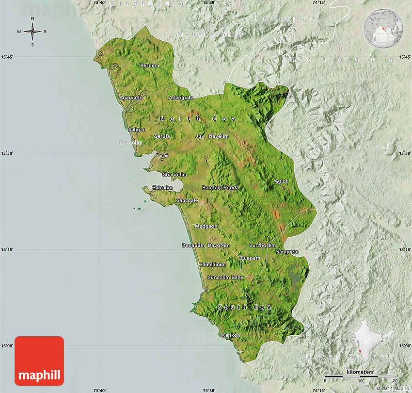
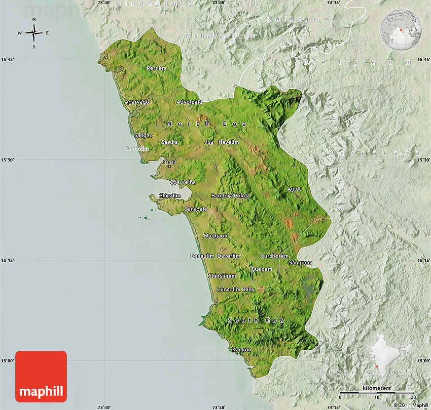

Goa is a state on the southwestern coast of India within the region known as the Konkan, and geographically separated from the Deccan highlands by the Western Ghats.[5] It is surrounded by the Indian states of Maharashtra to the north and Karnataka to the east and south, with the Arabian Sea forming its western coast. It is India's smallest state by area and the fourth-smallest by population.